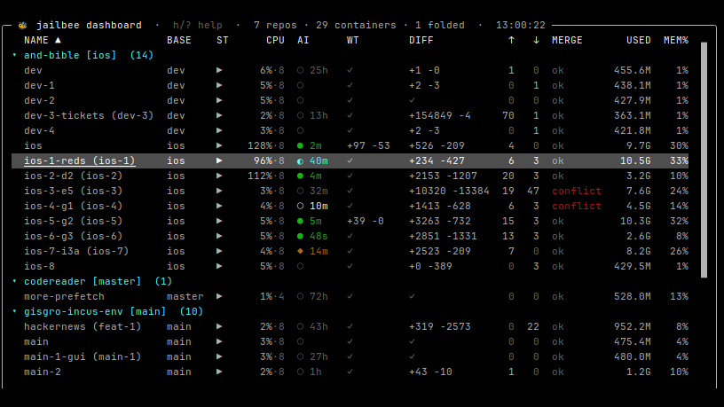
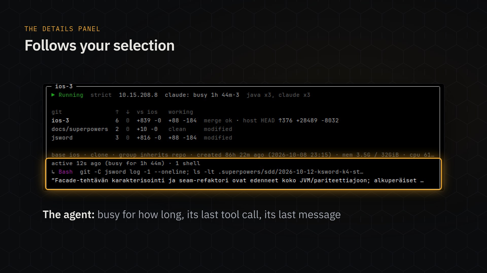
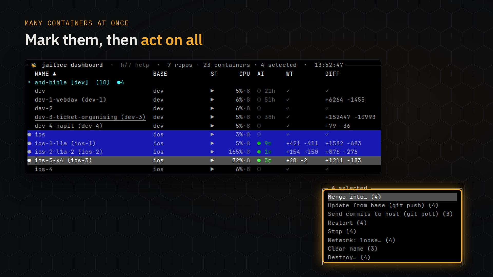
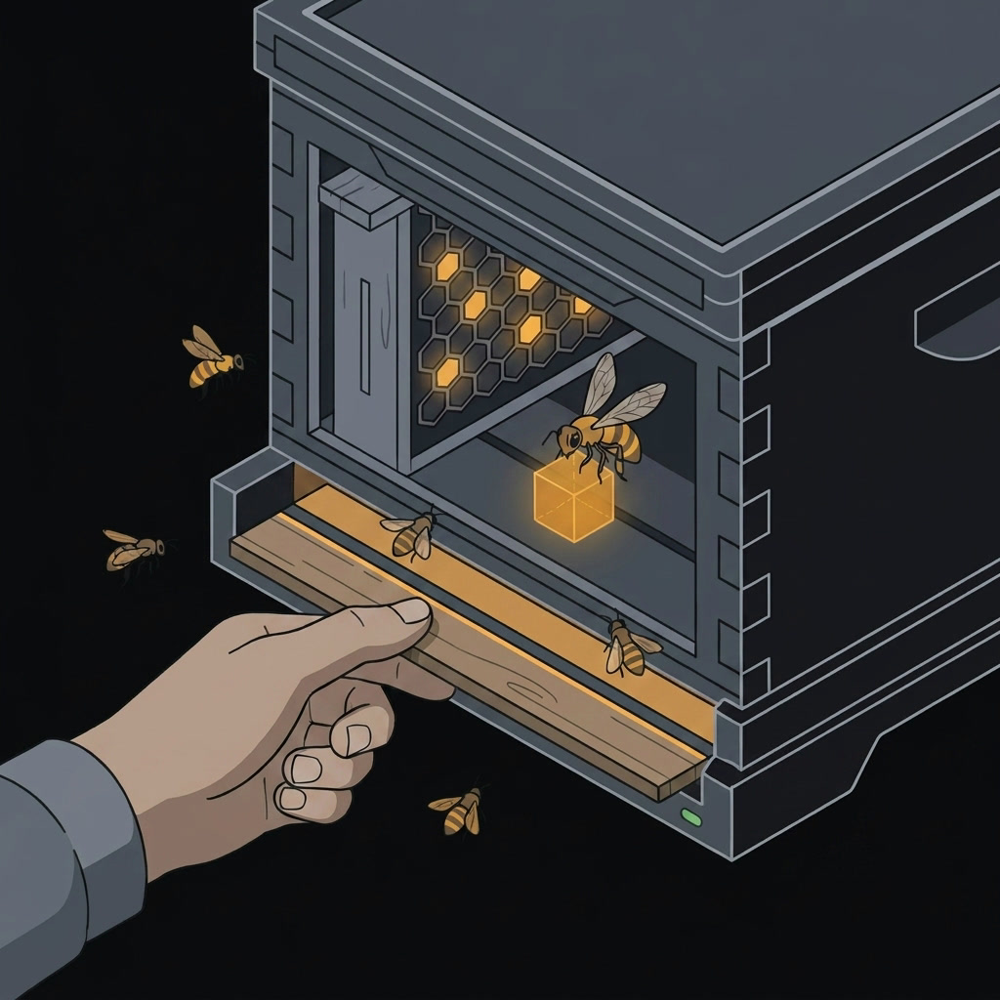
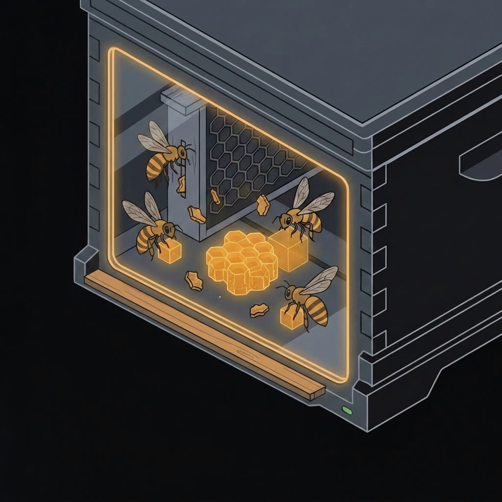

Isolated dev environments for Linux
JailBee gives each branch a full system container: its own services and, if you enable them, its own Docker daemon, IDE and browser. Build one golden image, then run several stacks in parallel on one host, each with its own localhost.
pipx install jailbee
Linux host required — see Requirements.
jailbee 1.7 · narrated · 3:25
The 3-minute tour. What a container per branch gives an agent, how the dashboard tells you which of a dozen agents needs you, what to do with many containers at once, and the two layers that hold the network in.
Every JailBee screen in it is a real screenshot; the voice is synthesized · Watch on YouTube · More on the channel

jailbee dashboard
Which agent needs you. Eight branches of one Android app, an emulator each, and a backlog of small ideas below. The AI column shows who is working, idle or waiting for you; the merge column, which branches need a hand.
working waiting for you idle
A real screenshot from daily use.

jailbee dashboard · details panel
What it is doing. Inspect the branch and changed submodules, then catch up on Claude Code's latest tool call and message — without opening another terminal.
A real screenshot from daily use.

Space · Enter
Act on many. Mark containers and one menu acts on all of them, saying how many each action applies to: restart, stop and destroy in parallel, push and pull once per repo, or merge several agents' attempts into one branch.
Real screenshots from daily use.
$ jailbee new feat/login # a container for the branch
$ jailbee tmux feat-login # attach to its agent
$ jailbee ls # containers and supported agent states
$ jailbee fork feat-login feat-login-2 # a second attempt
$ jailbee git merge feat-login-2 --into feat-login
$ jailbee git pull feat-login --no-cleanup # commits home; keep the container for PR
$ jailbee pr feat-login # open or update the PR
$ jailbee destroy feat-login # warns about detected work at riskjailbee · jb for short
Or from the command line. Everything the dashboard does is a
command — jailbee, or jb for short — so it
scripts and works over SSH. On a terminal, a value you leave out is asked for;
scripts pass it explicitly. jailbee console adds completion and
history.
Container names in the list are examples. The session is a real recording: every command and every line of output is real, and the two stretches marked ×6 are sped up.
Port 8080 is taken. The second branch's dev server, database and Docker Compose project all want names the first branch already holds.
The database is shared. A migration written on one branch quietly changes what the other branch is testing against.
Switching costs twenty minutes. Stash, rebuild, reinstall, re-seed — and then do it again when you switch back.
Point a coding agent at a branch and it gets a container to itself: its own working tree and its own services, with no other branch competing for the ports or the database. What you choose to share — caches, logins — stays shared.
The work stays one project the whole time. Each container is a branch of your repository, commits travel straight back to it when a run is worth keeping, and a container that goes wrong is thrown away rather than untangled.
Six real set-ups, each on one host with one dashboard and a container per branch.
A mobile app, one emulator per branch. Eight pieces of one
Android/iOS codebase, each in a container with an emulator of its own on the host's
/dev/kvm. The dashboard shows which of the eight agents is waiting for
you (host devices,
adb).
A backlog of small ideas, one container each. A container and an agent per idea too small for a ticket. Merge the ones that work back to main, from one container into another or straight to the host (git bridge).
A Compose stack per branch. Each branch runs its own Docker daemon and Compose project, so no port or database is shared. A browser inside the container reaches that branch on its own localhost (stacks).
A pull request reviewed beside your own work.
jailbee new --pr 482 boots the PR's stack in a container of its own and
leaves your branch alone. Push fixes back to its head, or open a stacked PR on top
(reviewing a pull request).
An agent left to work without prompts. A strict allowlist, an outbox you publish from the host, a read-only token. Snapshot before, restore after (running an agent without prompts).
A supervised admin task with time-boxed credentials. Lend the container a helpdesk's admin credentials as an optional mount for an hour and open the network for the same hour. Watch from the dashboard; both revert on their own (lending a credential, timed loose mode).

Choose what your containers can reach. Strict mode limits direct traffic by IP and port; an HTTP(S) proxy handles hostname rules, including wildcards, for tools that use it. Two layers, covering different kinds of traffic.
Need wider access for an install or an experiment? Switch to loose mode, with optional timed return to strict mode. The network guide covers setup and expiry.
Need a database or an adb server on the host? Add an explicit port forward.
These connections bypass the allowlist by design, and jailbee net status
shows them alongside it, so you can see the access you have opened.
Enable the desktop integrations to run your JetBrains IDE and browser inside the
container, with native windows on your Wayland desktop and the branch's own localhost.
You can also work remotely through RDP or waypipe ssh
(setup guide).
JailBee has first-class support for
Claude Code: turn it on
once and JailBee installs it in new containers, reusing a shared login, adding its
required endpoints to the container's allowlist, and providing skills to drive
jailbee itself. The same mechanism reaches other terminal coding agents
too — see
supported agents
for the list and how to add your own. Enable autostart to launch the agent as part of
the container's startup workflow. claude-jb runs the same Claude Code on other
providers' models through a LiteLLM proxy
(guide).
A disposable container makes it easier to let an agent work with fewer prompts. It is a workspace boundary, not a hostile multi-tenant one: whatever you share with the container — files, credentials, host services, and always the kernel — is within its reach. Review those connections before turning safeguards off — read the security model.

A shortcut for git. Commits move straight between your computer and a branch's container, and from one container into another, so you don't have to push to GitHub and pull again just to get code from one place to the other. Let two agents try the same change side by side, then merge the better one where you want it.
Your own Docker daemon. Enable the Docker stack and each container runs Docker and Compose of its own. Your Compose setup works unchanged, and no branch shares the host's daemon or its container names.
Set up once, reuse across branches. Reuse configured caches, tool settings and agent logins instead of starting from scratch. That shared state survives when you throw a container away.
Build once, manage in one place. New containers start from a golden image — cheap on a copy-on-write backend such as btrfs. The terminal dashboard brings every registered project together: open a shell, an IDE, a pull request or a diff from one place.
Submodules come along. Initialize them recursively on the host first; JailBee then sets them up in new containers and transports their commits in both directions. The git bridge handles the submodules as well as the parent repo.
Reach it from anywhere. An optional, key-only SSH service opens
the dashboard, a restricted console or policy-limited commands from your laptop,
and GUI apps can show up in a compatible RDP client or, through waypipe ssh, as
native windows on your own desktop (remote GUI).
Four other tools solve neighbouring problems. One of them boots a separate kernel for each sandbox, where JailBee's containers share the host's. Here is where each of them fits.
| Tool | What it is | Pick it instead when |
|---|---|---|
| Dev Containers |
The standard devcontainer.json, implemented by VS Code, Codespaces
and JetBrains.
|
a shared toolchain is all you need — and it has to work on Windows and macOS too. |
| BranchBox | A git worktree plus a Docker Compose project and a devcontainer, per feature. | you want parallel branches cheaply and you trust what runs inside them. |
| nono | A fence around one agent process, with a separate policy per tool it calls. | one agent needs fine-grained rules rather than a system of its own. It can also be layered inside a container. |
| Docker Sandboxes | A persistent microVM for an agent, with its own kernel and a deny-by-default network proxy. | you need a separate-kernel boundary. Sandboxes persist across sessions, but do not share their Docker images and layers. |
| JailBee | An unprivileged system container per branch — services, Docker, IDE and browser, sharing the host's kernel rather than booting a separate one. | the runtime is the hard part: a stack that boots, listens and renders, several of them at once. |
The kernel is the trade-off: sharing it is what lets a JailBee container be a full system without booting a second one, and also why a separate-kernel boundary is Docker Sandboxes' to offer, not JailBee's — the security model spells out what that means for an unattended agent.
Read the full comparison — what each tool does with your working tree, your credentials and the network, and what JailBee costs you.